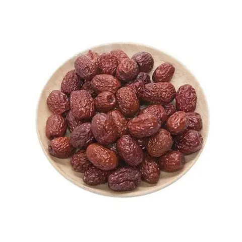
Red dates / jujubes
雞心紅棗
gai1 sam1 hung4 zou2
TCM benefits
補中益氣、養血安神
Boosts qi, nourishes blood, calms the mind.
Every ingredient on the list, with photos, Chinese names and Cantonese pronunciation, ready to show at the shop.
42 shopping items, plus flour as an alternative to pancake mix.

補中益氣、養血安神
Boosts qi, nourishes blood, calms the mind.
活血驅寒、解毒、預防嘔吐
Improves circulation, dispels cold, detoxifies, prevents nausea.
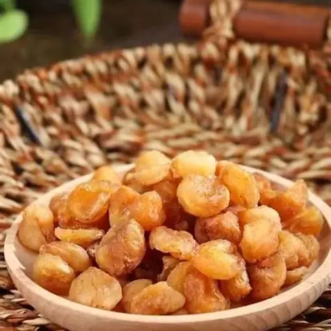
補血氣、益智寧神、補心脾
Nourishes blood and qi, sharpens and calms the mind, supports heart and spleen.
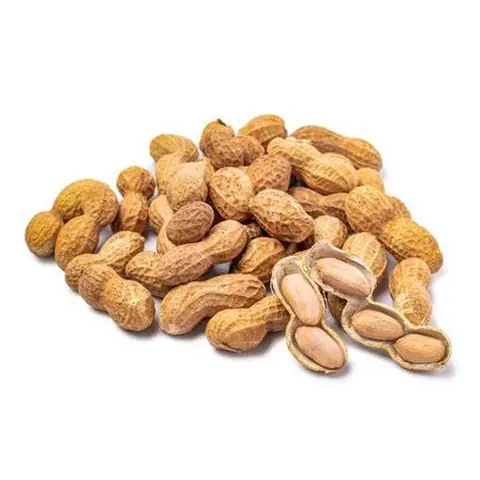
補血催奶
Nourishes blood, boosts milk supply.
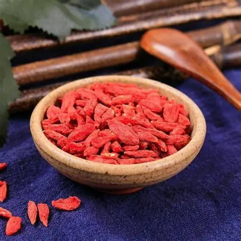
清肝排毒、養血明目
Clears the liver, detoxifies, nourishes blood, brightens eyes.
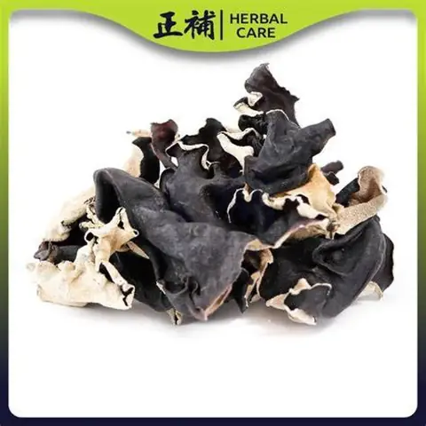
祛瘀血
Clears blood stasis.
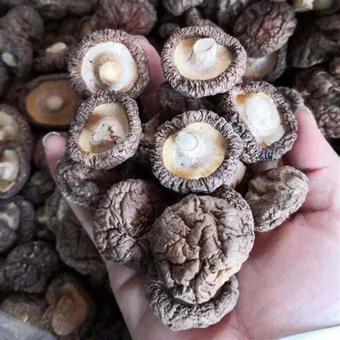
補肝健脾、益氣血
Supports liver and spleen, boosts qi and blood.
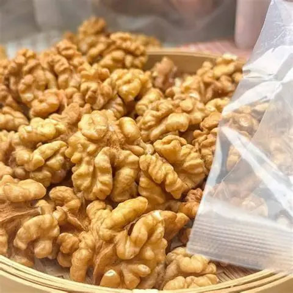
補氣養血、益智健腦
Nourishes qi and blood, supports the brain.
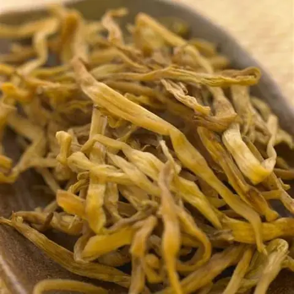
解毒消腫、止血除煩、通乳
Detoxifies, reduces swelling, stops bleeding, eases irritability, boosts milk flow.
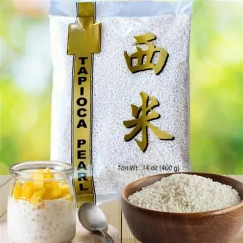
調理脾胃、補充能量、緩解疲勞、美容養顏
Supports spleen and stomach, restores energy, eases fatigue, good for complexion.
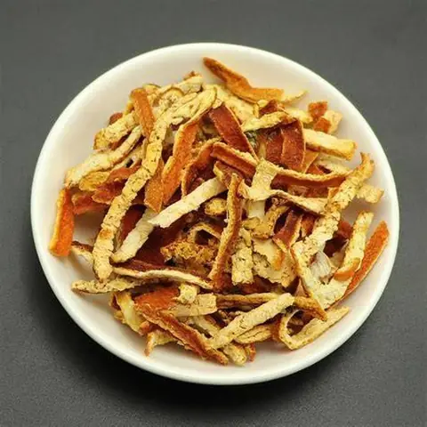
排氣促消化、增加食欲、維生素B、C
Relieves gas, aids digestion, boosts appetite, vitamins B and C.
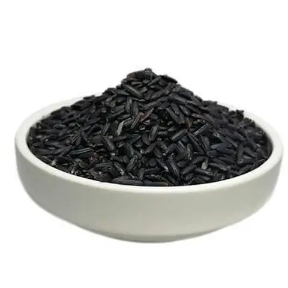
健脾、補血活血
Strengthens spleen, nourishes blood, improves circulation.
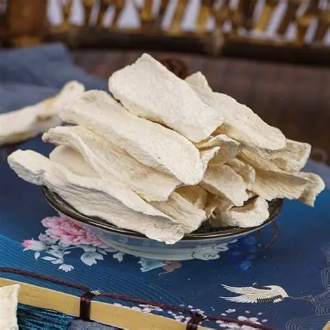
健脾胃
Strengthens spleen and stomach.
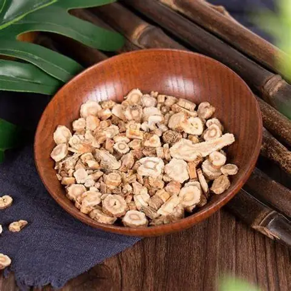
清熱養陰、潤肺止咳、除煩
Clears heat, nourishes yin, moistens lungs, relieves cough, eases irritability.
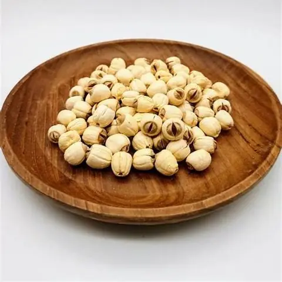
鎮靜安神、補中益氣、促進睡眠
Calms the mind, boosts qi, promotes sleep.
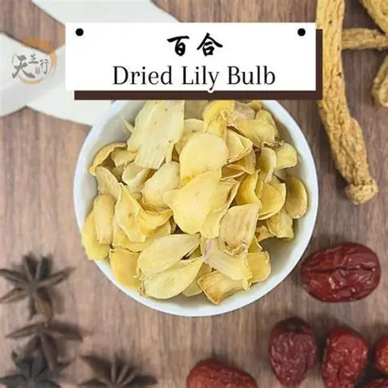
清肺潤燥、滋陰清熱、理脾健胃、滋陰潤燥、美容養顏
Moistens lungs, nourishes yin, clears heat, aids digestion, good for complexion.
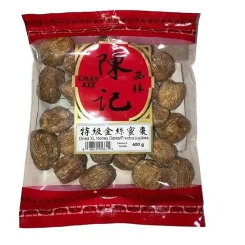
有益脾、潤肺、強腎補氣和活血
Supports spleen, moistens lungs, strengthens kidneys, boosts qi, improves circulation.
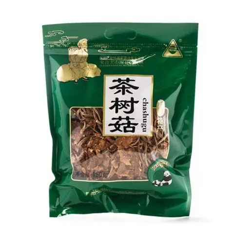
益氣開胃、健脾止瀉功效
Boosts qi and appetite, strengthens spleen, stops diarrhea.
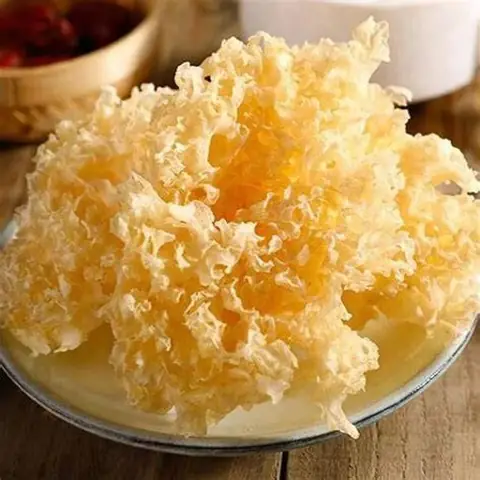
補腎、潤肺、生津、止咳、清熱、養胃、補氣、和血、強心
Supports kidneys, moistens lungs, promotes fluids, relieves cough, clears heat, nourishes stomach, boosts qi and blood, strengthens heart.
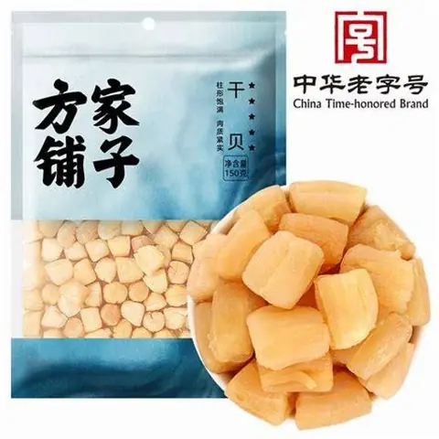
豐富蛋白質、利尿、消水腫
Rich in protein, diuretic, reduces swelling.
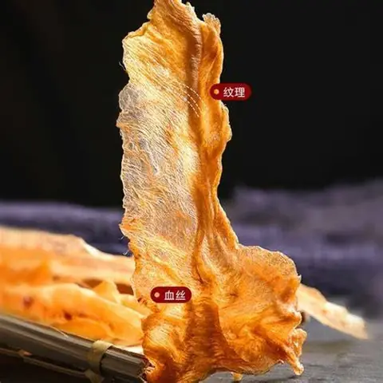
益氣補腎、滋陰養顏；豐富蛋白質及膠質
Boosts qi, supports kidneys, nourishes yin, good for complexion; rich in protein and collagen.
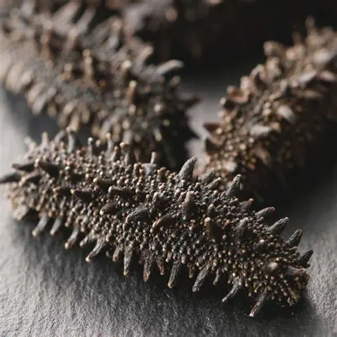
大量的鈣、鋅、硒；增強體質、延緩衰老、補充蛋白質
Rich in calcium, zinc, selenium and protein; builds strength, slows aging.
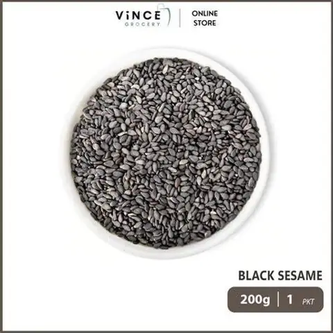
改善心血管健康、促進腸道蠕動、維持骨骼健康、保護皮膚和毛髮、抗氧化、幫助入睡
Heart health, bowel regularity, bone health, skin and hair, antioxidant, helps sleep.
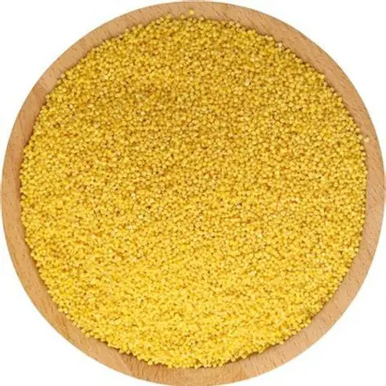
安眠、除熱
Helps sleep, clears heat.
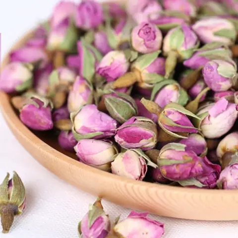
活血化瘀、理氣解鬱、美容養顏、促進消化、改善睡眠
Improves circulation, clears stasis, lifts mood, good for complexion, aids digestion, improves sleep.
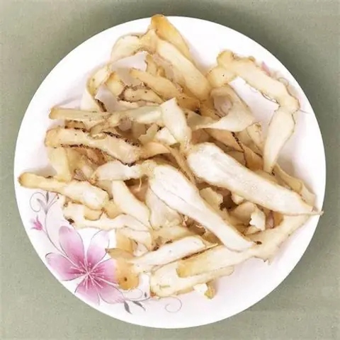
養陰、潤燥、除煩、止渴
Nourishes yin, moistens dryness, eases irritability, quenches thirst.
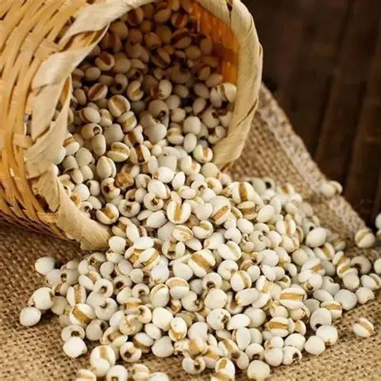
利水消腫、健脾祛濕
Drains fluid, reduces swelling, strengthens spleen, clears dampness.
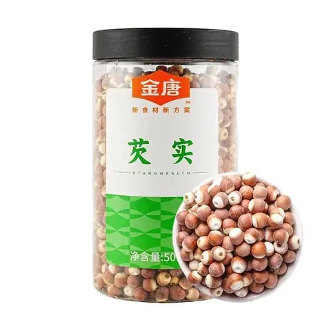
補中益氣、滋養固腎、補脾止瀉
Boosts qi, strengthens kidneys, supports spleen, stops diarrhea.
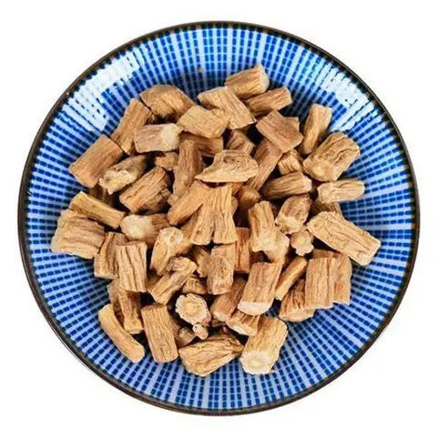
補脾氣和肺氣、補氣養血生津
Boosts spleen and lung qi, nourishes qi and blood, promotes fluids.
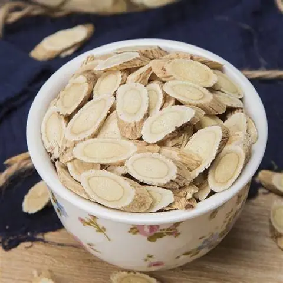
益氣升陽、利水消腫、善補肺氣
Boosts qi, drains fluid, reduces swelling, strengthens lung qi.
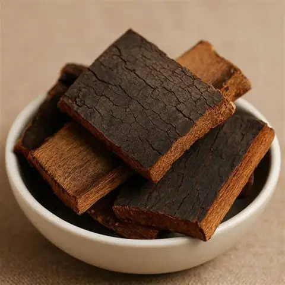
滋養肝腎、強壯筋骨
Nourishes liver and kidneys, strengthens muscles and bones.
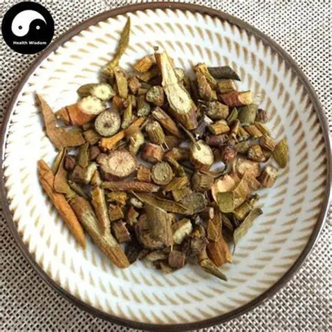
補肝腎、強筋骨、除風濕、通經絡、益血、安胎、產後催乳
Supports liver and kidneys, strengthens muscles and bones, relieves rheumatism, nourishes blood, boosts postpartum milk supply.
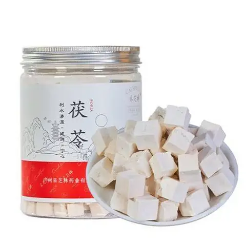
健脾、寧心、利尿；脾虛食少、驚悸失眠、心神不安
Strengthens spleen, calms the heart, diuretic; for poor appetite, palpitations, insomnia, restlessness.
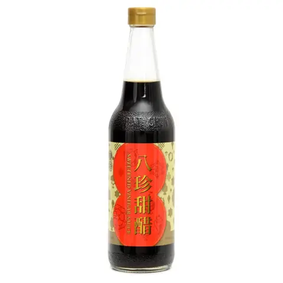
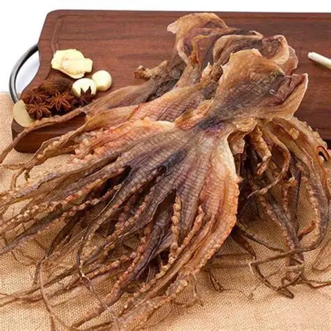
催奶作用
Boosts milk supply.
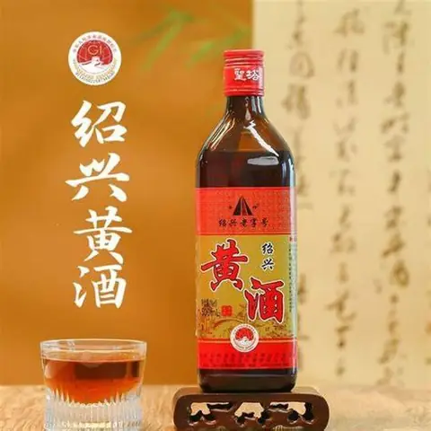
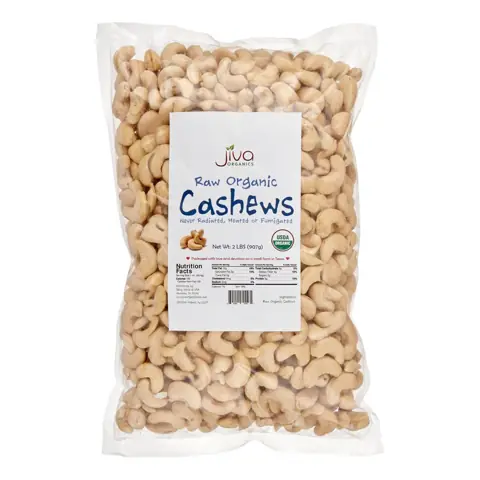
潤腸通便、調節血脂膽固醇、保護血管
Relieves constipation, regulates cholesterol, protects blood vessels.
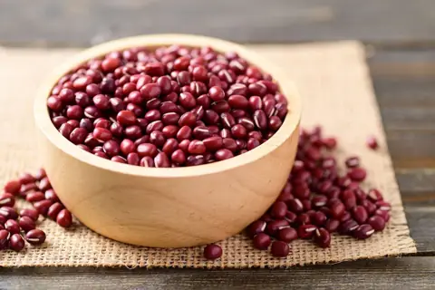
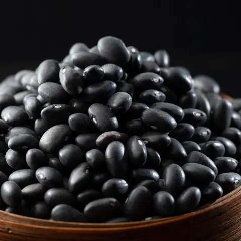
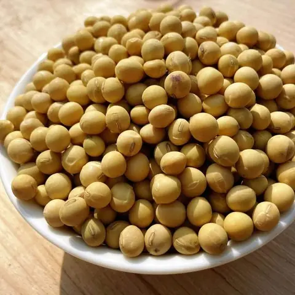
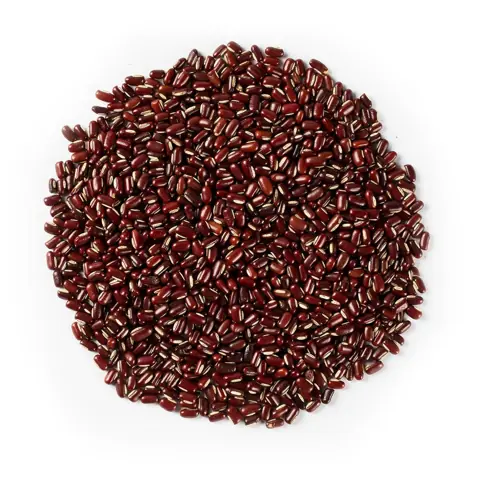
Not the same as 紅豆 — the list asks for both. Ask for 赤小豆 by name.
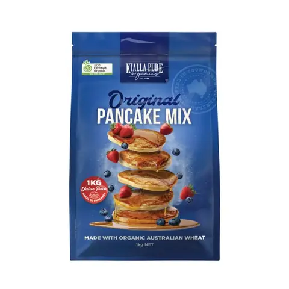
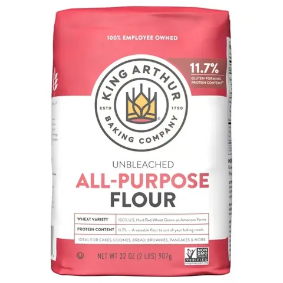
These 12 items were marked in red. Annie said not to buy them yet.
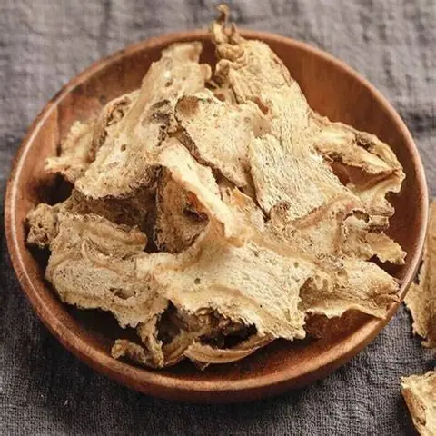
補血活血、調經、行滯止痛、溫經散寒、活血化瘀去除黃褐斑、雀斑
Nourishes and moves blood, regulates periods, relieves pain, warms against cold, clears stasis, fades dark spots and freckles.
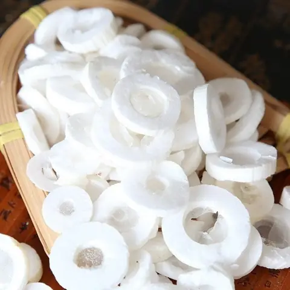
水腫、黃疸、濕溫病、產後乳少、目昏耳聾、鼻塞失音、經閉帶下
For swelling, jaundice, damp-heat illness, low postpartum milk, blurred vision and hearing loss, nasal congestion and hoarseness, missed periods and discharge.
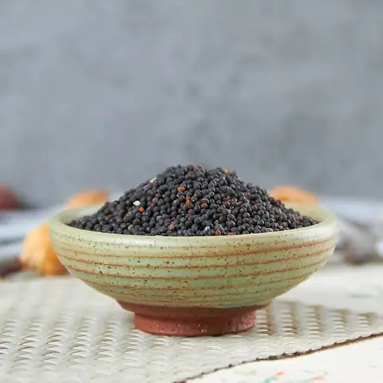
活血通經、下乳消腫、利尿通淋
Promotes blood flow and periods, boosts milk flow, reduces swelling, diuretic.
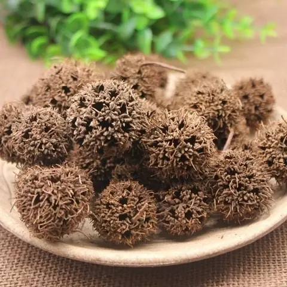
抗過敏、消炎、通竅祛風、止癢、散疹
Anti-allergy, anti-inflammatory, clears sinuses, relieves itching and rashes.
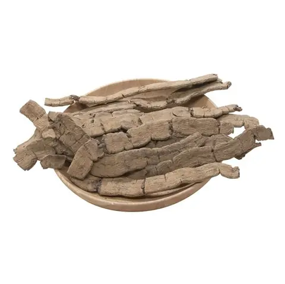
治風冷腰胯疼痛、降壓安定、利尿
For cold-related lower back and hip pain; lowers blood pressure, calming, diuretic.
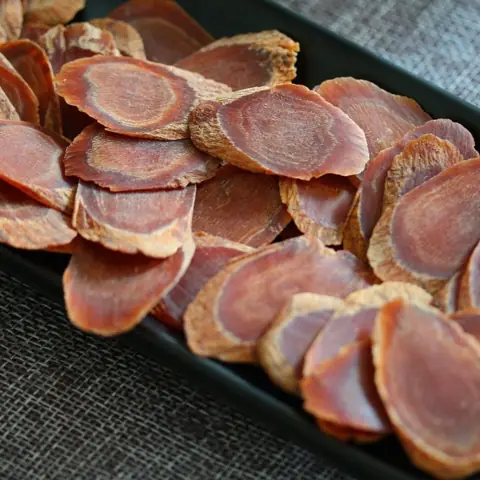
大補元氣、緩解疲勞、增強機體免疫力、氣弱不攝血、崩漏下血
Strongly boosts vital qi, eases fatigue, boosts immunity; for bleeding from weak qi.
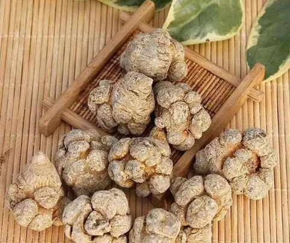
活血養顏、改善氣色、美白淡斑
Improves circulation and complexion, brightens skin, fades spots.
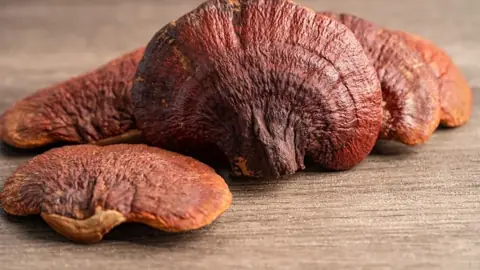
排肝毒、緩解疲勞、鎮定、幫助放鬆神經
Detoxifies the liver, eases fatigue, calming, relaxes the nerves.
去頭風降壓、擴展血管、增加血管通透性、頭痛眩暈、破傷風
For headaches and dizziness; lowers blood pressure, widens blood vessels, tetanus.
活血行氣、祛風止痛
Moves blood and qi, dispels wind, relieves pain.
清熱解毒、消腫止痛、美容養顏
Clears heat and toxins, reduces swelling and pain, good for complexion.
Fresh ingredients to buy after leaving hospital. Skip any foods you know cause allergies or won’t be eaten.
Illustrative pork tenderloin (豬柳); 豬柳梅 cut terminology may vary by butcher.
No ingredients match your search.